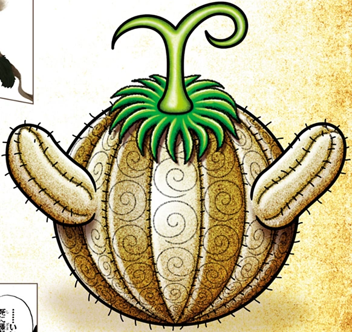

|
De Goro Goro no Mi is een duivelsfruit van het Logia-type die de kracht geeft om naar believen bliksem te creëren, te controleren en te worden, waardoor de gebruiker een bliksemmens wordt (雷人間, Kaminari Ningen?); Volgens Nico Robin is het een van de weinige vaardigheden die als "onoverwinnelijk" wordt aangeprezen. De vrucht werd gegeten door Enel. |
 |
De Mera Mera no Mi is een Duivelfruit van het Logia-type waarmee de gebruiker naar believen vuur kan creëren, besturen en in vuur kan veranderen. Het werd eerder gegeten door Portgas D. Ace, en momenteel door Sabo. |
|
De Yami Yami no Mi is een duivelsfruit van het Logia-type waarmee de gebruiker naar believen duisternis kan creëren, controleren en transformeren, waardoor de gebruiker een Darkness Human wordt (闇人間, Yami Ningen?). Het werd opgegeten door Marshall D. Teach, ook wel bekend als "Blackbeard", die het stal van commandant Thatch van de 4e divisie van de Whitebeard Pirates nadat hij hem had vermoord. |
|  |
De Suna Suna no Mi is een duivelsfruit van het Logia-type waarmee de gebruiker naar believen zand kan creëren, besturen en transformeren, waardoor de gebruiker in een zandmens verandert (砂人間, Suna Ningen?). Het werd opgegeten door Krokodil. |